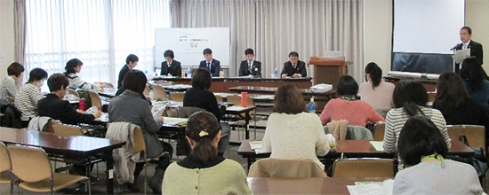
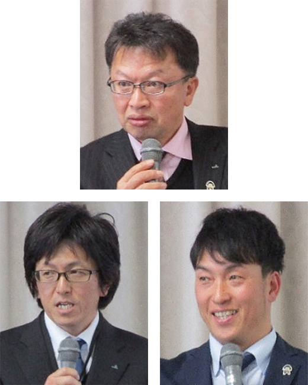

埼玉県消費生活協同組合役職員等研修事業
組合員学習会
「聞いて学ぼう 県内農業協同組合のとりくみ」
2018年度、埼玉県生協連は、地域課題の解決や持続可能なくらしづくりに向けて、11月の役職員研修、12月の組合員活動交流会、JA埼玉県中央会とともに広く呼びかけた1月の学習会と、協同組合の連携が役割を果たすことの意味や価値について学習する取り組みを重ねてきました。

今回は、組合員学習会の場で、初めて県内の農業協同組合の取り組みを報告いただき、相互理解を広げ、協同組合同士の交流を深める機会とすることを目的に開催しました。

- 日時
- 3月7日（木）10時30分～12時30分
- 会場
- 市民会館うらわ705・706会議室
- 題名
- 「聞いて学ぼう 県内農業協同組合のとりくみ」
- 報告者
-
事例1：「創造的自己改革の実践」
JA埼玉県中央会 経営指導部 小柴康明さん
事例2：「JA埼玉中央 TAC活動報告」
JA埼玉中央 営農部担い手サポートセンター 加藤秀一さん
事例3：「青パパイヤの産地化に向けた取り組みについて」
JA南彩 営農支援課 藤村直史さん - 対象
- 組合員活動に地域で関わり、運営・サポートをおこなっている方
- 参加
- 3生協28人（JA埼玉県中央会・埼玉県生協連事務局含む）
1．寄せられた感想（抜粋）
事例1：生協が抱える組合員の組合員としての自覚（出資と利用だけでなく運営の責務もある）が失われがちな現状が、農協も同じように感じました/生協と似ている部分が多く、未来に向けてめざす方向が近いと感じました/子どもの頃から親しんできた農協も時代に合わせて変革していることに心強さを感じました
事例2：農協の農家支援については、TACができる以前に農協の役割かと思っていたので意外でした/たった9人で5000もの訪問をするという、とても労力のいるところで信念を持った活動に感動しました/地域課題の解決にTACの役割は重要だとよくわかりました/「農業塾」を一般公開してほしいです
事例3：農業生産者の高齢化、後継者不足が深刻化する中、先行の明るい取り組みを伺えてありがたく感じました/埼玉でパパイヤがとれるというのにまず驚き！ぜひ食べてみます/医療生協としてぜひ交流したいです。（料理講習会とかして、販売促進いかがですか）/コープみらいで料理講習会を開けたらいいなと思います